1. Investigación de mercados
Es la mejor manera de poder conocer a los consumidores y clientes para mejorar la participación y el posicionamiento en el mercado
Jorge Eliécer Prieto Herrera (2013)
La American Marketing Association (AMA, 2004), define la investigación de mercados como la información utilizada para identificar y definir las oportunidades y los problemas de comercialización; generar, refinar y evaluar las acciones de marketing; monitorear el desempeño de la comercialización; y mejorar la comprensión de la comercialización como un proceso. La investigación de mercados especifica la información necesaria para abordar estas cuestiones, diseña el método de recogida de información, administra e implementa el proceso de recogida de datos, analiza los resultados y los comunica junto con sus implicaciones.
Para Mahotra (2008) la investigación de mercados es la identificación, recopilación, análisis, difusión y uso sistemático y objetivo de la información con el propósito de mejorar la toma de decisiones relacionadas con la identificación y solución de problemas y oportunidades de mercadotecnia.
Se puede definir la investigación de mercados como el proceso de recopilación, procesamiento y análisis de información que ayuda en la creación del plan de mercadeo de una organización, respecto a temas relacionados con el mercadeo como: Clientes, competidores y el mercado.
Para Jorge Eliecer Prieto (2013) la investigación de mercados es un excelente medio de apoyo y consulta de la gerencia porque:
Apoya la creación de estrategias eficaces
Ayuda en la integración del marketing mix
Identifica oportunidades de mercado
Permite conocer al consumidor
Disminuye los riesgos de inversión
Determina el tipo de publicidad que se debe hacer
Visualiza la introducción a un nuevo mercado
Analiza el sistema de distribución
Define la política de precios
Propone el sistema de ventas más apropiado
Participa en los cambios del producto o servicio
Mejora la imagen corporativa
Pronostica la oferta y la demanda de productos y servicios
Dando respuesta a la pregunta ¿Por qué hacer una investigación de mercados? Santiago Martínez Vela (2011) nos ilustra el siguiente gráfico.
Fuente: (Martinez,2011)
Ética en la investigación de mercados
Los dos factores éticos más importantes para la investigación son la confidencialidad y honestidad del cliente. Cada uno de ellos es cuestión de ética. La ética se define como los principios o valores morales que por lo general gobiernan la conducta de un individuo o grupo. La conducta ética no es, sin embargo, una relación unidireccional. Clientes y proveedores, así como trabajo de campo, también deben actuar en forma ética. Las cuestiones éticas van desde consideraciones prácticas estrechamente definidas, como la obligación de un investigador de ser honesto con sus clientes, a cuestiones sociales y filosóficas más amplias, como la responsabilidad de una compañía de preservar el medio ambiente y proteger los derechos de los empleados. Muchos problemas éticos se desarrollan de conflictos entre los diferentes intereses de los dueños de la compañía y sus trabajadores, clientes y comunidad circundante. Los gerentes deben equilibrar lo ideal con lo práctico: la necesidad de producir una ganancia razonable para los accionistas de la compañía con honestidad en las prácticas de negocios, y con consideraciones ambientales y sociales más amplias. (McDaniel,2016)
A continuación, en la siguiente tabla se mencionan algunas prácticas No éticas dentro del proceso de investigación de mercados.
| Proveedores de investigación |
Clientes de investigación |
Trabajo de campo |
|---|---|---|
| No generar cambios en el precio cuando avanza la investigación |
Seleccionar un proveedor para la investigación y contactar a otros |
Usar encuestados profesionales |
| Permitir subjetividad en la investigación |
Solicitar asesoría y metodología gratuitas |
No validar los datos |
| Abusar de los encuestados | Hacer promesas falsas | |
| Vender investigación innecesaria |
Emitir solicitudes de propuesta no autorizadas |
|
| Violar la confidencialidad del cliente |
Fuente: José María Sainz, 2016
1.1 Investigación cualitativa
Toda investigación inicia con una idea que se desarrolla paulatinamente. Para comenzar una investigación se necesita conocer las rutas que han sido construidas por las comunidades científicas para estudiar cualquier tema, fenómeno o planteamiento. Según (Sampieri, 2018) hay tres rutas fundamentales: la cuantitativa, la cualitativa y la mixta.
La investigación cualitativa se enfoca en comprender los fenómenos, explorándolos desde la perspectiva de los participantes en su ambiente natural y en relación con el contexto. El enfoque cualitativo se selecciona cuando el propósito es examinar la forma en que ciertos individuos perciben y experimentan fenómenos que los rodean, profundizando en sus puntos de vista, interpretaciones y significados (Lindlof y Taylor, 2018; Punch, 2014, Lichtman, 2013, Morse, 2012, Encyclopedia of Educational Psychology, 2008).
Una investigación cualitativa se requiere cuando las necesidades de información demandan argumentos específicos, evaluación de reacciones, profundización en los conceptos y valores, detección de motivadores y valoración de las emociones generadas con un planteamiento. este enfoque precisa el soporte y ejecución de un profesional en el área de psicología, idealmente con conocimientos de mercado, conducta de consumidor, entre otro (Martinez,2011).
Las limitaciones de la investigación cualitativa según McDaniel (2016) son:
Uno de sus inconvenientes es que los éxitos y fracasos de marketing se basan en pequeñas diferencias en actitudes u opiniones sobre una mezcla de marketing y no es tan notoria.
Una segunda limitación de los estudios cualitativos es que no necesariamente son representativos de la población de interés para el investigador.
Las principales motivaciones para llevar a cabo una investigación cualitativa son (Hague, 2006):
- Para evaluar un mercado, producto o cliente del que no existe información previa.
- Identificar y explorar conceptos.
- Para identificar y aprender de grupos de consumidores específicos.
- Para identificar patrones de comportamiento, creencias, actitudes, opiniones y motivos.
- Para establecer prioridades entre creencias, opiniones y actitudes.
- Para identificar problemas en profundidad y desarrollar modelos para futuras investigaciones.
- Para testar las primeras impresiones de una encuesta piloto.
- Para proporcionar experiencias de la interacción de los clientes con los productos.
- Para evaluar un cuestionario.
- Para evitar el distanciamiento de los encuestados en preguntas directas y comprometidas.
José María Sainz (2016) explica la evolución del marketing en el siguiente gráfico en donde inicia con un marketing indiscriminado o de masas que pretende abarcar la totalidad del mercado con las mismas estrategias, pasa a un marketing segmentado dirigido a segmentos estratégicos específicos como el público objetivo o target y finalmente al marketing digital (B2B o B2C), en donde se crea una relación continua con el cliente y la comunicación fluye en ambos sentidos. Teniendo esta evolución una reperEn la investigación cualitativa se emplean métodos de recolección de datos que son no cuantitativos, con el propósito de explorar las relaciones sociales y describir la realidad tal como se experimenta. Requiere un profundo entendimiento del comportamiento humano y las razones que lo gobiernan, podría usarse para examinar las actitudes, sentimientos y motivaciones del usuario.cusión importante en el alcance y contenido del plan de marketing.
1.2 Investigación cuantitativa
La investigación cuantitativa es diseñada para recopilar información de muestras estadísticamente representativas de una población objetivo y es usualmente llevada a cabo entre varios cientos, a veces miles de encuestados, por esta razón la información es generalmente obtenida usando cuestionarios de estructura estandarizada. Este tipo de información es analizada con procesos estadísticos (Palmer, 2012)
Una investigación cuantitativa se hace necesaria cuando los objetivos planteados están orientados a encontrar cifras, cuantificar intenciones y formas de proceder, establecer proporciones, diferencias e importancia relativa de los factores evaluados. esta investigación requiere el proceso de muestreo y el soporte de la estadística para buscar información representativa y suficiente del mercado en estudio. (Martinez,2011)
Permite examinar los datos de manera numérica, especialmente en el campo de la estadística. Se requiere que entre los elementos del problema de investigación exista una relación cuya naturaleza sea lineal, que sea posible definirlo, limitarlo y saber hacia dónde dirige.
| Puntos de comparación. |
Cualitativa. | Cuantitativa. |
|---|---|---|
| Foco de la investigación. (centro de interés). |
Cualidad (naturaleza, esencia). | Cantidad (cuánto, cuántos). |
| Conceptos asociados. | Trabajo de campo, etnografía naturalista. |
Experimental, empírica, estadística. |
| Objetivo de la investigación. |
Comprensión, descripción, descubrimiento, generadora de hipótesis. |
Predicción, control, descripción, confirmación, comprobación de hipótesis. |
| Características del diseño. |
Flexible, envolvente, emergente. |
Predeterminado, estructurado. |
| Marco o escenario. | Natural, familiar. | Desconocido, artificial. |
| Muestra. | Pequeña, no aleatoria, teórica. | Grande, aleatoria, representativa. |
| Recogida de datos. | El investigador como instrumento primario, entrevistas, observaciones. |
Instrumentos inanimados (escalas, pruebas, encuestas, cuestionarios, computadores). |
| Modalidad de análisis. | Inductivo (por el investigador). | Deductivo (por métodos estadísticos). |
| Hallazgos | Comprensivos, holísticos, expansivos |
Precisos, limitados, reduccionistas |
Fuente: (Prettel,2016)
En algunos casos se realiza la investigación mixta que entrelaza a las dos anteriores (cuantitativa y cualitativa) y las mezcla, pero es más que la suma de las dos anteriores e implica su interacción y potenciación. Los métodos mixtos representan un conjunto de procesos sistemáticos, empíricos y críticos de investigación e implican la recolección y el análisis de datos tanto cuantitativos como cualitativos, así como su integración y discusión conjunta, para realizar inferencias producto de toda la información recabada y lograr un mayor entendimiento del fenómeno bajo estudio. (Hernández-Sampieri y Mendoza, 2008).
1.3 Proceso de investigación de mercados
El proceso de investigación puede entenderse como una secuencia general de seguir para así poder diseñar y llevar a cabo una investigación (Brown y Suter, 2012).
Definir el problema a investigar
Seleccionar y establecer el diseño de la investigación
Recolección de datos y análisis
Formular hallazgos
Seguimiento y control de marketing
Fuente: Autor
PASOS
- Definición del diseño de investigación, exploratoria, descriptiva o causal.
- Análisis de datos secundarios.
- Técnicas para la obtención de datos cualitativos y cuantitativos.
- Diseño de cuestionarios.
- Proceso de muestreo y tamaño de la muestra.
- Plan para el análisis de datos.
1.3.1 Definir el problema a investigar
Para McDaniel y Gates (2016) El proceso de investigación se inicia reconociendo un problema u oportunidad de mercadotecnia. La investigación de mercados puede utilizarse para evaluar las opciones de productos, promociones, distribución o fijación de precios. Además, se emplea para encontrar y evaluar nuevas oportunidades de mercado.
Estas son algunas preguntas para realizar el planteamiento del problema
¿Por qué ha disminuido el desempeño de la empresa en el volumen de ventas?
¿Se ha implementado la mezcla de mercadeo este año?
¿Qué tan satisfechos están mis clientes?
¿El mercado está segmentado?
¿El posicionamiento de la empresa es el establecido en los objetivos?
¿La imagen proyectada por la empresa es la que los clientes esperan obtener?
Al definir el problema a investigar es necesario recopilar la información realizando una investigación exploratoria a continuación McDaniel y Gates (2016) explican el paso a paso:
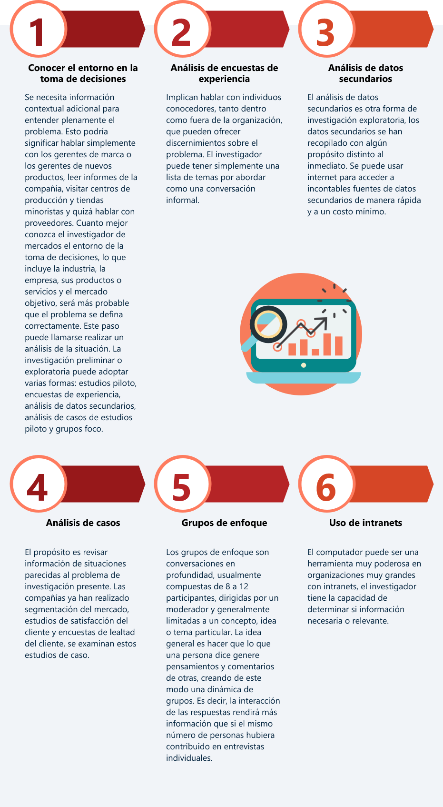Uno de los métodos utilizados para definir y formular el problema a investigar que indican las razones que originan la necesidad de investigar, plantean las preguntas destacadas y justifican la necesidad de hacer la investigación es:
Método del árbol de problemas
El árbol de problemas es una técnica que se emplea para identificar una situación negativa (problema central), la cual se intenta solucionar analizando relaciones de tipo causa-efecto. Para ello, se debe formular el problema central de modo tal que permita diferentes alternativas de solución, en lugar de una solución única.
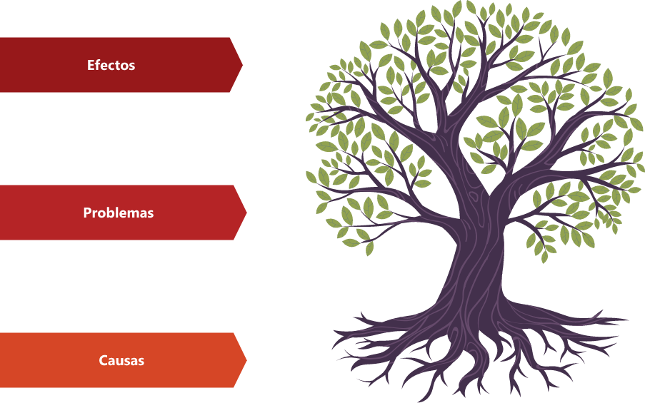Luego de haber sido definido el problema central, se exponen tanto las causas que lo generan como los efectos negativos producidos, y se interrelacionan los tres componentes de una manera gráfica.
La técnica adecuada para relacionar las causas y los efectos, una vez definido el problema central, es la lluvia de ideas. Esta técnica consiste en hacer un listado de todas las posibles causas y efectos del problema que surjan, luego de haber realizado un diagnóstico sobre la situación que se quiere resolver.
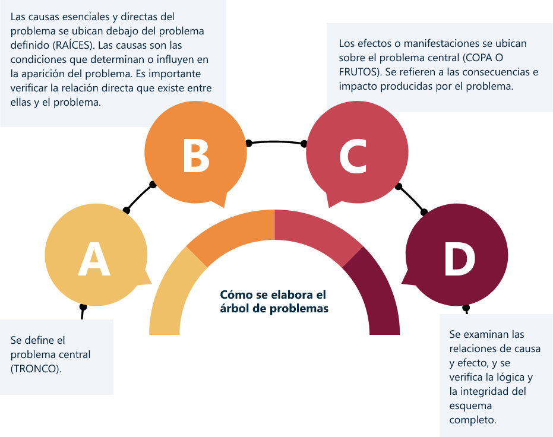Fuente: UNESCO, Organización de las naciones unidas para la educación, la ciencia y la cultura.
1.3.1.1 Objetivos
Los objetivos de la investigación deben basarse en la definición del problema de investigación. Unos objetivos de investigación enunciados formalmente representan una guía para decidir qué pasos hay que dar. La premisa es que si se alcanzan los objetivos, el que decide tiene la información necesaria para resolver el problema (Hair, 2010).
Un objetivo claro significa que sea de fácil comprensión, es decir, que se le pueda encontrar rápidamente el sentido; y concreto, que su redacción sea corta, precisa, a fin de evitar largos contenidos que causan confusión. Con la definición del objetivo, el investigador identifica además el segmento meta al cual va a dirigir la investigación (Prettel, 2016).
| Objetivo general | Objetivos específicos |
|---|---|
| Se refiere a la información que a nivel macro se pretende conseguir. es un planteamiento global, derivado de la inquietud original, que abarca y envuelve de manera concreta toda la necesidad de la empresa que requiere la investigación. (Martinez,2011) |
Teniendo claridad sobre el objetivo general, este debe ser desplegado en las inquietudes particulares que garanticen la respuesta a todas las cuestiones planteadas. Hay que estructurarlos pensando de lo general a lo particular, empezando con las necesidades de información más globales, hasta terminar en el detalle, que normalmente se refiere a aspectos más “micro” sobre la información. (Martinez,2011) |
Para Prettel (2016) los objetivos serán los propósitos y las metas a alcanzar, con su correspondiente justificación, pueden enfocarse en tres ámbitos: social, económico y administrativo.
| Objetivo Social | Objetivo Económico | Objetivo Administrativo |
|---|---|---|
| Tiene en cuenta consumidores, productores, productos o servicios en relación a expectativas y necesidades de los clientes. |
Aclara alternativas de beneficio, utilidad o rentabilidad económica. |
Facilita la toma de decisiones gerenciales con base en las necesidades de los clientes. |
1.3.1.2 Alcance
El alcance de la investigación de mercados es bastante amplio, puede darse desde observaciones, entrevistas personales, experimentos, estudios de caso, hasta enfoques etnográficos, tratando de encontrar la forma como se comporta el consumidor o la persona objeto de análisis según la meta por alcanzar. (Prieto,2013)
Para Santiago Martínez Vela (2011), el público objetivo hace parte del alcance de la investigación, ya que genera los parámetros que harán que una u otra persona sea elegible para participar de la muestra diseñada y por ello está clasificado en dos tipos:
| Del producto/servicio | De la investigación |
|---|---|
| define quién es el consumidor, cliente o influenciador actual del producto o servicio. |
estima quién deber ser parte de la muestra para lograr los objetivos. |
Algunos ejemplos son: deseos, gustos, preferencias, actitudes, opiniones, percepciones, recordación y creatividad en distintos temas relacionados a la vida de los seres humanos y su desarrollo en el mundo.
1.3.1.3 Necesidades de información
Uno de los pasos más importantes del proyecto es desglosar el problema en preguntas de investigación, porque el cómo se defina el problema de la investigación influye en el resto de los pasos. La tarea del investigador es volver a enunciar las variables originales del problema en la forma de preguntas básicas: cómo, qué, dónde, cuándo y por qué. (Hair,2010)
A continuación, se mencionan algunos ejemplos de preguntas claves para el desarrollo de la investigación:
¿El producto o servicio es claro y fácil de comprender?
¿A qué precio debería ser vendido?
¿Posee ventajas comparativas frente a los productos de la competencia?
¿Le gusta la presentación del producto?
¿Compraría usted este producto sin mayor problema?
¿El sitio en donde se consigue es agradable y cómodo?
¿Qué productos o servicios reemplazaría usted por este nuevo producto?
¿Es coherente la publicidad con su utilidad?
¿Qué mejora le sugiere al producto o servicio?
¿El empaque tiene usos posteriores?
1.3.2 Establecer el diseño investigación
Para establecer el diseño de la investigación es necesario tener la siguiente secuencia:
01Investigación exploratoria: busca indicios para obtener información, se realiza una Investigación preliminar en la cual se recolecta información primaria y secundaria mediante mecanismos informales y no estructurados.
El principal objetivo de la investigación exploratoria consiste en proporcionar una idea preliminar del problema o situación que confronta el investigador. Este tipo de investigación se utiliza normalmente para identificar cursos de acción relevantes, obtener conocimientos adicionales antes de desarrollar un enfoque o definir el problema de forma más precisa. (Rosendo,2018)
Fuente: Estructurada con base en lo planteado por: Naresh k. Malhotra, (2008)
Malhotra (2018) confirma:
El objetivo de la investigación exploratoria es explorar o examinar una situación para brindar conocimiento y comprensión, y puede utilizarse para cualquiera de los siguientes propósitos:
- Formular un problema o definirlo con mayor precisión.
- Identificar cursos alternativos de acción.
- Desarrollar hipótesis.
- Obtener ideas para desarrollar un enfoque del problema.
- Establecer prioridades para la investigación posterior.
Jorge Eliecer Prieto (2013) define cuatro métodos para realizar investigación exploratoria:
Encuestas de experiencia o entrevista en profundidad (preguntas a personas expertas en un tema específico).
Estudios de caso (averiguación intensiva sobre situaciones afines).
Análisis de datos secundarios (revisión de investigaciones similares).
Estudios piloto o grupos foco (investigación a pequeña escala con muestreo, poco rigurosa).
02Investigación Concluyente: El objetivo de la investigación concluyente es probar hipótesis específicas y examinar relaciones de causa-efecto. Esto requiere que la información necesaria esté claramente especificada. Se basa en grandes muestras representativas, y los datos se analizan normalmente mediante análisis cuantitativos. Los hallazgos se consideran concluyentes por naturaleza y pueden utilizarse para la toma de decisiones gerenciales. (Rosendo,2018)
Descriptiva
Etapa que busca describir los problemas o indicios con mayor detalle, cuantificando el conjunto de métodos y procedimientos que describen a las variables de marketing.
Es aquella que busca una representación gráfica de características y fenómenos del mercado y la determinación de la frecuencia con que se usan, tratando de hacer predicciones y determinar el grado de asociación entre sus variables, tal como ocurre en los estudios de perfil de consumidores, potencial del mercado y utilización de un producto seccionado. Las fuentes de datos más usadas en este tipo de investigación son el cuestionario a personas seleccionadas, los datos secundarios y la simulación de escenarios. (Prieto,2013)
Consiste en recopilar datos numéricos para responder preguntas de investigación; da respuestas a las preguntas sobre quién, qué, cuándo, dónde y cómo. En marketing, los ejemplos de la información descriptiva incluyen actitudes, intenciones, preferencias, hábitos de compra, evaluación de las estrategias actuales de mezcla de marketing y datos demográficos de los consumidores. (Hair,2010)
Causal
Penetra en la realidad del estudio para determinar las causas que han originado el problema, se controlar varios factores para determinar cuál de ellos es el causante del problema y tomar decisiones.
Es aquella que permite obtener información relevante sobre la relación casusa-efecto en un sistema de mercadeo, como las que se hacen para mirar la incidencia en los volúmenes de venta de los cambios en los niveles de precio. Las fuentes de datos más usadas en este tipo de investigación son el cuestionario a personas seleccionadas, los datos secundarios y la observación. (Prieto,2013)
La investigación causal es más apropiada cuando los objetivos incluyen la necesidad de entender qué variables (por ejemplo, publicidad, número de vendedores, precio) inciden en la variable dependiente (ventas, satisfacción de los clientes) (Hair,2010)
Sistemática
Utilizada para evaluar un proceso mientras se va dando, encuentra el problema y propone soluciones.
Fuente: Autor
En la siguiente tabla (Santos, 2017) nos da ejemplos para los diseños de investigación.
| Diseño Investigación | |
| Exploratoria | |
| Formular problemas precisos | |
| Establecer prioridades de investigación | |
| Eliminar ideas no viables | |
| Desarrollar hipótesis | |
| Desarrollar escalas de medida | |
| Descriptiva | |
| Describir competidores o clientes | |
| Describir segmentos | |
| Implementar medidas, medir el desempeño | |
| Causal | |
| Describir competidores o clientes | |
Fuente: (Dos Santos,2017)
1.3.2.1 Fuentes de información
Con el fin de satisfacer las necesidades de información, el investigador puede recopilar datos secundarios, datos primarios o ambos. Los datos secundarios son información que ya existe en algún lugar, que se ha recopilado con anterioridad para otro fin. Hay muchas fuentes de datos secundarios, incluidas las fuentes internas y externas. Los datos primarios consisten en información recopilada para el propósito específico en cuestión. (Rosendo, 2018)
Fuente: Autor
| Información secundaria interna | Información secundaria externa |
|---|---|
| Todas las organizaciones tienen datos internos disponibles en los diferentes departamentos. Por ejemplo, informes de ventas, actividades de publicidad y promoción, información sobre clientes, anteriores proyectos de investigación y desarrollo, informes de fabricación, etc. Las fuentes internas tradicionales de datos secundarios son documentos tales como facturas de ventas, informes de cuentas por cobrar, ventas trimestrales, cartas/comentarios de clientes, pedidos por correo, formularios, informes de solicitudes de crédito, informes de actividades de ventas, estudios previos o formularios de gastos del personal de ventas (Hair, 2010). |
Los datos secundarios externos son recopilados por organismos externos, como gobiernos, asociaciones comerciales, organizaciones sin ánimo de lucro, servicios de investigación de mercados, compañías consultoras, grupos de compradores, inventarios de tiendas y publicaciones académicas y de interés general. Los datos secundarios también se encuentran en fuentes computarizadas como proveedores de información, sitios comerciales de internet, listas de correo o servicios de compensación y logística de mercadotecnia. (Hair,2010) |
En Colombia se tienen muchas fuentes de datos secundarios:
El DANE (Departamento Administrativo Nacional de Estadísticas)
El Banco de la República
Las Cámaras de Comercio
FENALCO (Federación Nacional de Comerciantes)
CAMACOL, fuente para investigaciones sobre el sector de la construcción
Los ministerios del gobierno nacional
ICFES - Instituto Colombiano para el Fomento de la Educación Superior
Los investigadores pueden visitar sitios en donde se encuentra variedad de datos disponibles para obtener información secundaria, incluida inteligencia competitiva. Aunque mucha información es gratis, otra, como la ofrecida por Nielsen Site Reports, debe comprarse.
Según McDaniel (2016) las ventajas en la investigación de mercados al usar información secundaria es la siguiente:
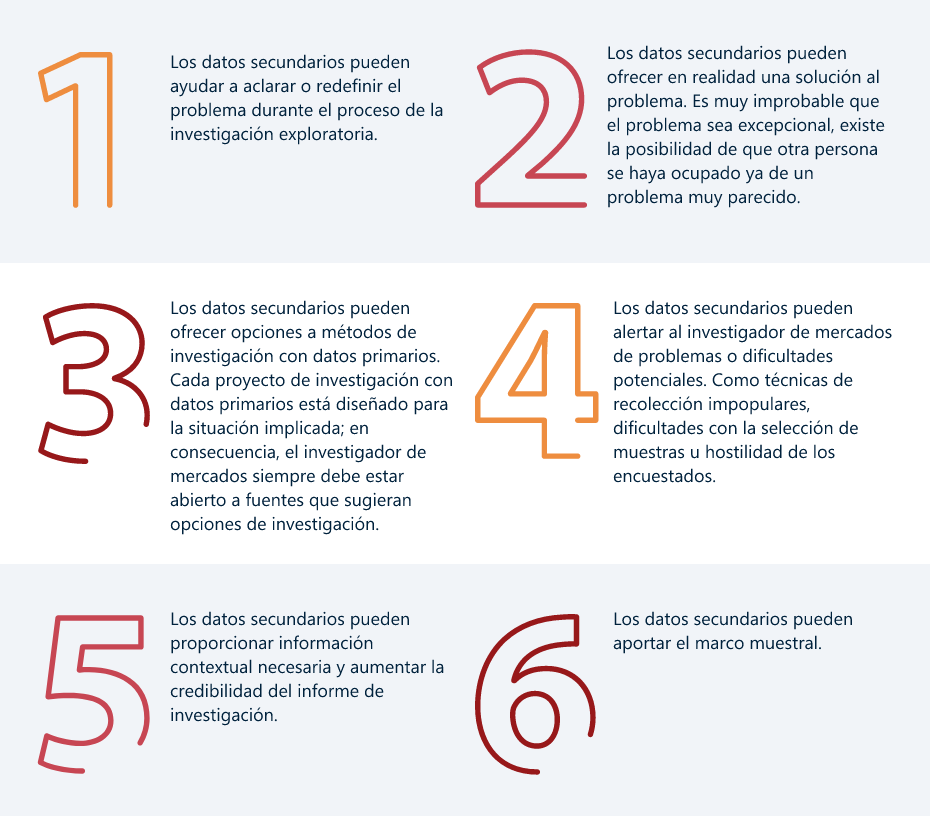| Información secundaria en la era digital |
|---|
| Hoy en día y al igual que con otras muchas actividades en los negocios, la existencia de Internet ha revolucionado la forma en que los datos secundarios pueden ser y son recogidos. La aparición de una variedad de motores de búsqueda y la preeminencia de marcas como Google ha hecho la tarea de recolección de datos secundarios mucho más fácil. De hecho, se podría sugerir que Internet ofrece tanta información no clasificada y difuminada que la búsqueda de datos secundarios en la era moderna consiste en determinar qué datos son útiles y cuáles deben ser desechados. |
| Para los investigadores existen portales y sitios web que permiten acceder a las estadísticas gubernamentales, informes sectoriales y estadísticas útiles sobre la población, comportamientos de uso, etc. Se encuentran en la identificación de los patrones de consumo, en el seguimiento de tendencias, estimación del potencial de mercado, previsión de ventas, selección de zonas comerciales, implementación de la base de datos de clientes o el desarrollo de listas de clientes potenciales. (Dos Santos,2017) |
Análisis de la situación
La información primaria está ligada a la generación de nueva información directa desde la población objetivo y consiste en buscar la información del fenómeno directamente en individuos que comparten una característica particular respecto al fenómeno estudiado. (Neme,2017)
Los datos primarios están directamente vinculados con la información que el investigador desarrolla o recopila específicamente para el proyecto de investigación en cuestión y pueden ser investigación cualitativa y cuantitativa. (Rosendo,2018)
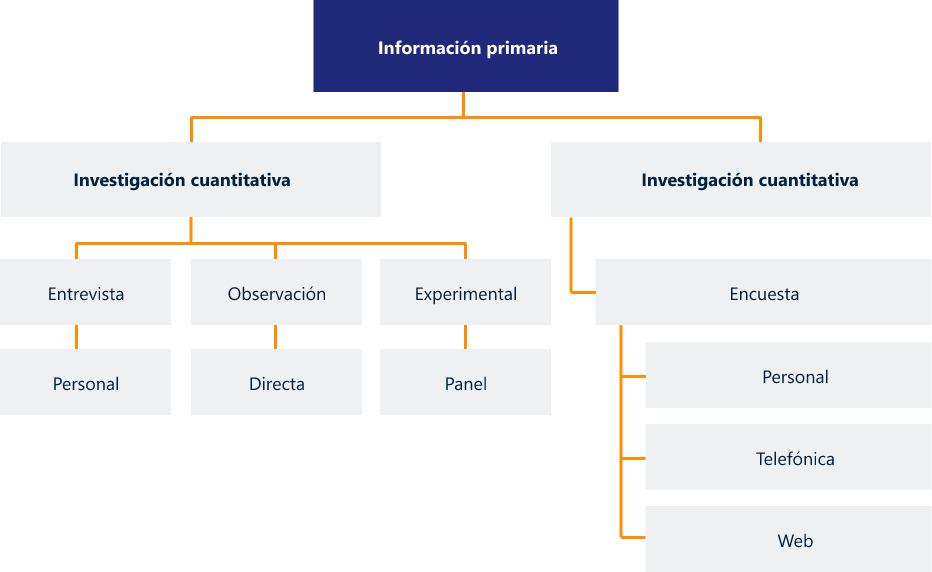Fuente: Autor
El recurso de internet como herramienta preferida de recolección de datos cuantitativos y cualitativos ha tenido el mayor impacto en el cambio de las metodologías de investigación de mercados y de lo que esperan los clientes. las metodologías no ponen en riesgo los resultados, y dan la posibilidad de reducir el trabajo de campo. Para muchos clientes y usuarios de la investigación de mercados, la necesidad de rapidez ha dejado de lado la necesidad de hacer análisis exhaustivos e interpretaciones de los datos y, en algunos casos, la precisión analítica. (Hair,2010)
En la siguiente tabla, (Rosendo, 2018) nos explica las diferencias entre datos primarios y secundarios.
| Datos primarios | Datos secundarios | |
|---|---|---|
| Proceso de recopilación | Específicamente para el proyecto | Para otros propósitos |
| Implicación | Alta implicación | Relativamente fácil y rápido |
| Costo de recopilación | Altos | Relativamente baratos |
| Tiempo de recopilación | Largo | Corto |
Fuente: (Rosendo,2018)
1.3.3 Recolección de datos
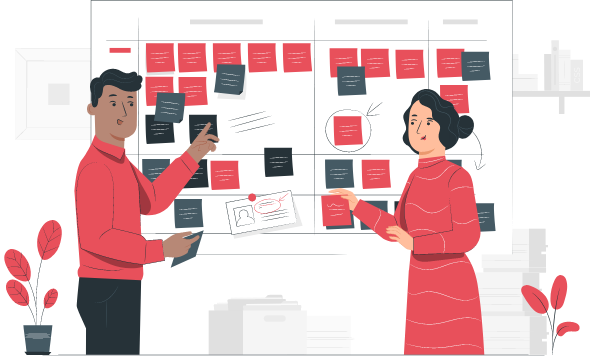El investigador selecciona las técnicas particulares que deben utilizarse en la solución del problema formulado. Hay un amplio número de técnicas disponibles para la recogida de datos. Algunas técnicas son únicas para un enfoque de investigación. La investigación cualitativa podría ser utilizada para preceder a una investigación cuantitativa.
Para la recolección de datos se requiere el uso de personal. Las diversas técnicas de investigación implican variados métodos de recopilación de datos. Por ejemplo, las encuestas requieren la participación directa de los encuestados. Esto implica rellenar un cuestionario o interactuar con un entrevistador. (Dos Santos,2017)
Errores de investigación
Es importante tener en cuenta los posibles errores en los que se puede incurrir al momento de recolectar los datos para no caer en ellos, a continuación, en la siguiente tabla se presentan los principales.
| Diseño Investigación | |
| Errores del investigador | |
| Error por sustitución de información: se obtiene información diferente a la buscada. | |
| Error de medida: ej. Se busca medir la satisfacción y se mide la lealtad. | |
| Error de definición de la población objetivo: variación entre la población real y la población definida en la investigación. | |
| Error por marco muestral incompleto: ej. Bases de datos desactualizadas. | |
| Error de análisis de datos: ej. Uso inadecuado de procedimientos estadísticos. | |
| Errores del entrevistador | |
| Error de selección de la muestra: buscan encuestados diferentes a los seleccionados en la muestra. | |
| Error de pregunta: ej. No se utilizan palabras exactas del diccionario. | |
| Error por engaño: Crea o inventa respuestas, en una o la totalidad del cuestionario. | |
| Errores del encuestado | |
| Error de incapacidad: Los encuestados no dan respuestas precisas, por olvido o por aburrimiento. | |
| Error de resistencia: Responden mal intencionalmente por vergüenza o por ser socialmente aceptable. | |
Fuente: (Mahotra,2008)
1.3.3.1 Trabajo de campo
El trabajo de campo abarca la selección, la capacitación, la supervisión, la remuneración y la evaluación de las personas que recogen los datos en el terreno propio de la investigación. La capacitación debe ser considerada como una inversión dentro del presupuesto de la investigación porque allí radica en gran parte el éxito del proyecto. Esta debe darse en técnicas de recolección de datos, conocimiento profundo del cuestionario, manejo de entrevistas, solución de preguntas y desarrollo de la empatía y autoestima, entre otros temas (Prieto, 2013).
Implica operar tanto en el campo, como es el caso de entrevistas personales (en casa, en un centro comercial, o entrevistas personales asistidas por ordenador), desde una oficina por teléfono o por e-mail. La selección apropiada, formación y evaluación de los trabajadores de campo ayuda a minimizar los errores en el proceso de la recogida de los datos (Rosendo, 2018).
1.3.3.2 Técnicas de recolección de información
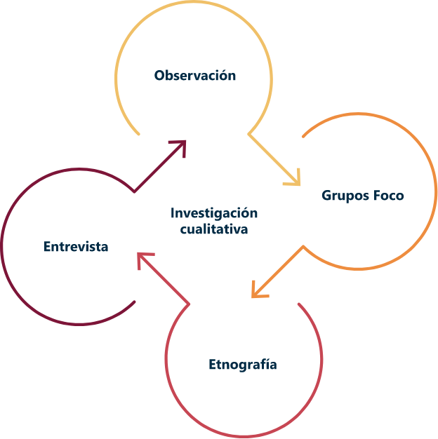Fuente: Autor
Observación
Es una técnica que consiste en observar a las personas cuando efectúan un trabajo. La observación tiene amplia aceptación científica. Los sociólogos, sicólogos e ingenieros industriales utilizan extensamente ésta técnica con el fin de estudiar a las personas en sus actividades de grupo y como miembros de la organización. El propósito de la organización es múltiple: permite al analista determinar que se está haciendo, como se está haciendo, quien lo hace, cuando se lleva a cabo, cuanto tiempo toma, dónde se hace y porque se hace.
Para McDaniel (2016) “La investigación por observación puede definirse como el proceso sistemático de registrar patrones de ocurrencias o conductas sin normalmente cuestionar o comunicarse con las personas implicadas. En el siguiente cuadro da ejemplos de situaciones presentadas al utilizar la técnica de observación.
| Situaciones | Ejemplos |
|---|---|
| Personas mirando a personas | Específicamente para el proyecto |
| Personas mirando fenómenos | Observadores estacionados en supermercados ven a consumidores seleccionar productos, con el propósito de saber cuánto copra en el punto de venta. |
| Máquinas mirando a personas | Cámaras de video graban a consumidores seleccionando productos. |
| Máquinas mirando fenómenos | Programas avanzados de software registran a personas navegando en internet. |
Fuente: (McDaniel,2016)
- Técnica. La observación puede ser formal o informal, se puede realizar en un mercado real o se realice en un entorno controlado; directa o indirecta según el medio empleado para la captura de información; e incluso consciente o encubierta en función del conocimiento que tenga el observado sobre la situación. En cuanto a los procedimientos de observación, normalmente los segmentamos en humanos o mecánicos (Sarabia Sánchez, 1999). En este primer grupo los observadores son investigadores cualificados y entrenados que observan y registran la información. Y en el segundo grupo encontramos medios como la fotografía, cámaras de vídeo o contadores y células fotoeléctricas o de infrarrojos. Entre los métodos más innovadores podemos destacar los estudios con seguimiento ocular, respuesta galvánica de la piel o análisis facial. Los procedimientos más usuales son los paneles de minoristas, análisis de contenido y análisis histórico. (Dos Santos,2017)
Grupos focos
Un grupo foco o grupo de discusión es una conversación entre varias personas sentados juntos, usualmente en una mesa redonda. Una persona (sea el investigador u otro encargado) juega el papel de moderador, él inicia el debate e interviene periódicamente para mantener la sesión en el tema deseado. El moderador puede cerrar la discusión cuando considere que el tiempo ha terminado y todos los temas hayan sido abordados (Bradley, 2010)
- Técnica. Es una entrevista no estructurada y libre a un grupo reducido de personas, por lo general entre seis y diez. La duración puede estar comprendida entre una hora y media, hasta las seis horas. La dinámica es moderada por un investigador capacitado, normalmente psicólogos de profesión. Este trata de fomentar el diálogo con puntos guiados interviniendo lo menos posible, y siempre evitando preguntas directas. Siempre es habitual grabar la dinámica. Entre las aplicaciones se emplea para enfocar políticas de recursos humanos, interpretaciones de marcas, uso de productos, conceptos de nuevos productos, etc. (Dos Santos,2017)
Fuente: (McDaniel,2016)
Etnografía
Es una técnica descriptiva, por tanto, detalla el comportamiento de las personas en ambientes naturales. El proceso etnográfico se logra a través de la observación participante, en la cual el investigador se hace parte de la comunidad que está estudiando (Bautista, 2011)
Para McDaniel (2016) las ventajas de realizar investigación etnográfica son:
Se basan en la realidad. Mostrando exactamente cómo viven los consumidores con un producto, no solo lo que dicen sobre él o cómo recuerdan usarlo.
Puede revelar necesidades y deseos no expresados.
Puede descubrir beneficios de consumo no explotados.
Puede mostrar cómo, cuándo, por qué y dónde la gente compra marcas, y cómo las percibe en comparación con productos competidores.
Puede mostrar quién en la familia realmente usa un producto y quizá descubrir un potencial objetivo demográfico totalmente nuevo.
Aprovecha la experiencia de los consumidores con la categoría y su creatividad práctica mientras hacen una demostración de sus ideas de nuevos productos y mejoras de productos.
Puede ayudar a formar una mejor relación con los clientes, basada en un conocimiento íntimo de su estilo de vida.
- Técnica. El investigador se sumerge en un hogar, filial de grupos de empleados, o entre los vendedores de un gran almacén. Es particularmente útil cuando el segmento objetivo no puede verbalizar apropiadamente su necesidad, por ejemplo, el público infantil. (Dos Santos,2017)
Entrevista
Se utilizan para recabar información en forma verbal, a través de preguntas que propone el analista. El analista puede entrevistar al personal en forma individual o en grupos algunos analistas prefieren este método a las otras técnicas que se estudiarán más adelante. Es un intercambio de información que se efectúa cara a cara; sirve para obtener información acerca de las necesidades y la manera de satisfacerlas, así como consejo y comprensión por parte del usuario para toda idea o método nuevos.
- Técnica. Se realiza cara a cara entre dos personas, el investigador y el entrevistado. Se asemejan a las entrevistas psicológicas y clínicas, pero con otro propósito. Son habituales en el sector industrial, donde la dispersión y número de clientes no aconsejan otro método. Mediante la entrevista se recoge mejor la motivación del consumidor, es más profunda, novedosa, y subconsciente. la entrevista en profundidad de suele desarrollar en tres etapas. En la primera se realiza una preparación adecuada, no solo de un entorno cuidadosamente elegido y confortable, también por la estructura o guion. En esta fase reclutamos a los individuos cuidando que no conozcan el propósito de la entrevista con antelación para que no puedan prepararlo. La segunda fase, la entrevista, comienza con un saludo inicial y se explica el propósito de la entrevista. Se detalla el procedimiento y el proceso. La idea es crear un ambiente relajado y cómodo para expresar opiniones. Se valora la espontaneidad y la creatividad. Es conveniente grabar la conversación para no perder tiempo en anotar todo. La tercera parte de la entrevista se reserva al análisis y la interpretación. (Dos Santos,2017)
Para la investigación cuantitativa se utiliza la encuesta como técnica de recolección de información.
Investigación Cuantitativa
Encuesta
Fuente: Autor
- Encuesta. Se usa para describir un método de obtener información de una muestra de individuos. Esta “muestra” es usualmente sólo una fracción de la población bajo estudio. Las encuestas tienen una gran variedad de propósitos, y se pueden conducir de muchas maneras, incluyendo por encuestas personales, telefónicas o vía web.
| Encuesta personal | Encuesta telefónica | Encuesta Web |
|---|---|---|
| Es una forma de comunicación directa en la que un entrevistador pregunta a los encuestados cara a cara, requiere algún tipo de material o interacción. Ej. Para la elección de Gobernador se realizan encuestas personales para determinar quiénes votaran por determinado político. |
Es un método muy utilizado por los sistemas de marcación automática y el azar en las guías telefónicas. Ej. Directv realiza encuestas telefónicas para determinar el nivel de satisfacción de sus clientes después de realizar un mantenimiento. |
Se utiliza por medio de un computador y se requiere conectividad, consiste en incluir un link que lleva al usuario a una encuesta en la Web. Ej. Apple realiza una encuesta para determinar la satisfacción de sus clientes al usar sus productos en la página web o vía correo electrónico. |
En la actualidad existen muchas ventajas de utilizar encuestas en línea, según McDaniel (2016) la mayoría de las compañías enfrentan hoy ciclos más cortos de vida del producto, más competencia y un entorno de negocios rápidamente cambiante. Se deben tomar decisiones complejas y veloces, y la investigación en internet puede ayudar proporcionando información oportuna.
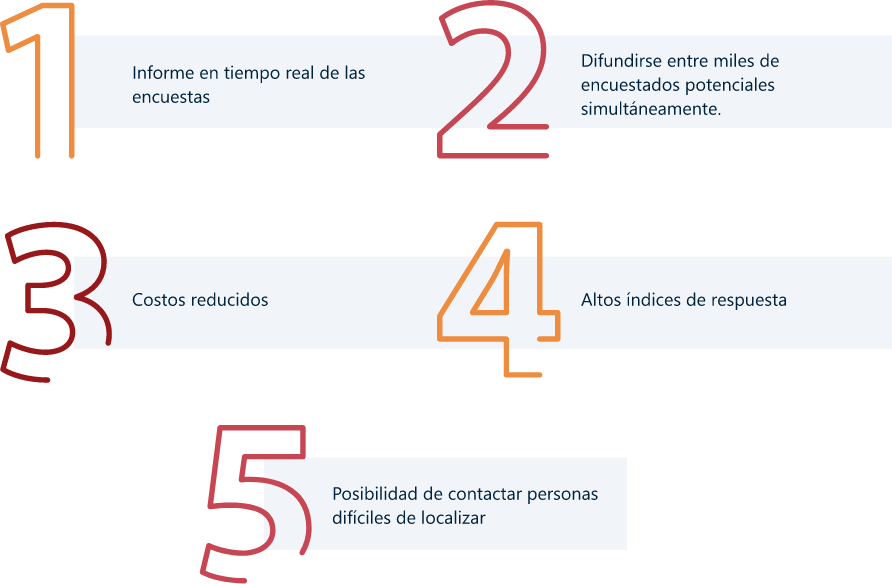La principal desventaja de este tipo de encuestas es que todos los usuarios de internet tienen acceso a las encuestas, pero todos no son representativos de la muestra seleccionada.
En la siguiente tabla se realiza un comparativo entre los tipos de encuesta más utilizados la encuesta personal y encuesta web.
| Personal | Web |
|---|---|
| Retroalimentación preguntas | Es más rápida |
| Explicar las preguntas | Audiovisual, más dinámica |
| Mayor empatía | Menos Interacción |
| Altos Costos | Menores costos |
| Miedo ser juzgado | Dificultades conectividad |
Fuente: Autor
1.3.3.3 Instrumentos de recolección de información
El principal instrumento de recolección de información en la investigación cualitativa y cuantitativa es el cuestionario.
Cuestionario
Para McDaniel (2016) un cuestionario es una serie de preguntas diseñadas para generar los datos necesarios para cumplir los objetivos del proyecto de investigación. El cuestionario debe traducir los objetivos de la encuesta en una forma comprensible para los encuestados y “extraer” de ellos la información requerida. Al mismo tiempo, debe recuperar sus respuestas en una forma fácil de resumir y traducir en hallazgos y recomendaciones que satisfagan los requisitos de información de la organización.
De acuerdo con (Rosendo, 2018), el cuestionario es un conjunto de preguntas escritas o verbales que debe responder el encuestado. Es muy importante diseñar un buen cuestionario para asegurar que no se introducen errores en el conjunto de datos. Cualquier cuestionario debe tener tres objetivos principales:
Traducir la información necesaria en un conjunto de preguntas.
Debe ser motivante y alentador para el encuestado.
Debe minimizar el error de respuesta.
- Tipos de cuestionarios
| Cuestionario Abierto | Cuestionario Cerrado |
|---|---|
| Al igual que las entrevistas, los cuestionarios pueden ser abiertos y se aplican cuando se quieren conocer los sentimientos, opiniones y experiencias generales, proporciona una amplia oportunidad para quienes escriban las razones de sus ideas. Algunas personas, sin embargo, encuentran más fácil escoger una de un conjunto de respuestas preparadas que pensar por sí mismas. |
El cuestionario cerrado limita las respuestas posibles del interrogado. Por medio de un cuidadoso estilo en la pregunta, el analista puede controlar el marco de referencia. Este formato es el método para obtener información sobre los hechos. También fuerza a los individuos para que tomen una posición y forma su opinión sobre los aspectos importantes. |
Jorge Eliecer Prieto (2013) plantea las siguientes preguntas antes de realizar el cuestionario:
¿La pregunta es necesaria?
¿El entrevistado tendrá la capacidad de contestar la pregunta?
¿Debo hacer varias preguntas en vez de una?
¿La persona entrevistada nos dará toda la información o tratará de ocultarla?
¿Tendrá el entrevistado la información solicitada?
¿Tenemos el presupuesto para hacer la investigación?
Para la realización del cuestionario es necesario realizar una serie de pasos:
¿El producto o servicio es claro y fácil de comprender?
¿A qué precio debería ser vendido?
¿Posee ventajas comparativas frente a los productos de la competencia?
¿Le gusta la presentación del producto?
¿Compraría usted este producto sin mayor problema?
¿El sitio en donde se consigue es agradable y cómodo?
¿Qué productos o servicios reemplazaría usted por este nuevo producto?
¿Es coherente la publicidad con su utilidad?
La introducción del cuestionario también es importante para la tasa de respuesta. En las entrevistas personales y telefónicas, el guion de apertura es muy importante para lograr que las personas participen. En cuestionarios por correo autoadministrados, el mensaje introductorio escrito –normalmente una carta de presentación o un mensaje de correo electrónico– también debe escribirse para aumentar y motivar la cooperación. (Rosendo,2018)
En la siguiente gráfica se muestran los tipos de preguntas más utilizadas para la elaboración de un cuestionario.
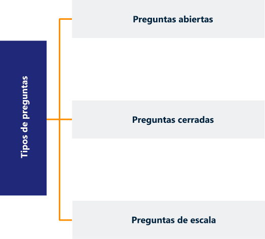Fuente: Autor
Preguntas abiertas son aquellas a las que el encuestado responde con sus propias palabras. En otras palabras, el investigador no limita las opciones de respuesta. Ej. ¿Cuáles son las ventajas de utilizar este producto?
Preguntas cerradas requiere que el encuestado haga una selección en una lista de respuestas, se dividen en dos tipos: preguntas dicotómicas, con una opción de respuesta de dos elementos, y preguntas de opción múltiple o multicotómicas. Ej. ¿Su color favorito es el rojo? Si / No o ¿Cuál es su color favorito? a. Amarillo b. Rojo c. Azul d. Verde
Preguntas de escala, preguntas cerradas en las que las opciones de respuesta están diseñadas para recoger la intensidad del sentimiento. Ej. ¿Se encuentra satisfecho con la atención prestada? A. Excelente b. Buena c. Regular d. Mala
El cuestionario debe tener un hilo conductor que va de lo general a lo especifico y la organización de las preguntas McDaniel (2016) las explica en el siguiente cuadro:
| Ubicación | Tipo | Ejemplos | Razón |
|---|---|---|---|
| Preguntas de selección | Preguntas calificadoras | "¿Tienes esquís?” | La meta es identificar a los encuestados objetivo. |
| Primeras preguntas | De calentamiento | ¿Qué marca de esquís tienes? | Preguntas fáciles de contestar indican al encuestado que el cuestionario es simple. |
| Primer tercio de preguntas | Transiciones | ¿Qué características de los esquís son las que más te gustan? |
Preguntas relacionadas con los objetivos de la investigación requieren un poco más de esfuerzo. |
| Segundo tercio | Preguntas difíciles y complicadas |
A continuación aparecen 10 características de los esquís, dar respuesta utilizando la escala. |
El encuestado se ha comprometido a terminar el cuestionario. |
Fuente: (McDaniel,2016)
¿Son necesarias todas las preguntas?
¿Dan respuesta al objeto de la investigación?
¿Es muy largo el cuestionario?
1.3.4 Formular hallazgos
Análisis e interpretación de datos
El análisis depende del tipo de información requerida, del diseño de la investigación y de la calidad de los datos obtenidos. Cuando se van a examinar de forma crítica los datos se deben ordenar en categorías significativas (revisión, codificación y tabulación). La revisión y codificación son funciones básicas, porque la primera se hace necesaria para eliminar errores en los datos iniciales, lo cual se puede hacer en el terreno de campo o en la gerencia del proyecto, y la segunda agrupa los datos en las categorías correspondientes, facilitando la tabulación. La tabulación consiste en contar el número de aspectos, características, datos, etcétera, que se insertan dentro de las categorías definidas por el investigador. Esta puede hacerse manual, mecánica o electrónica, dependiendo de la magnitud de los datos. (Prieto,2013)
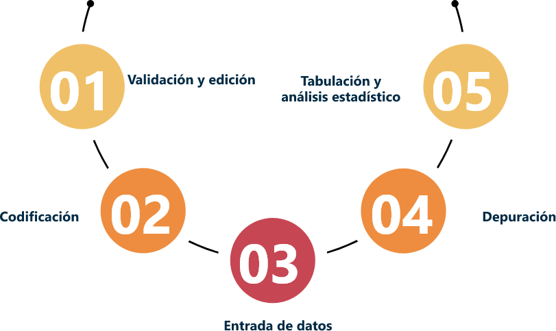Fuente: Autor
Según McDaniel (2016) lo primero que se debe hacer es realizar un proceso de validación y edición de la información recolectada, en donde se confirma que las entrevistas se realizaron de acuerdo con lo especificado para detectar fraudes o fallas del entrevistador y se revisa si existen preguntas con respuestas sin registrar.
Segundo se codifican las preguntas, se refiere al proceso de agrupar y asignar códigos numéricos a las respuestas a una pregunta particular, tercero se ingresan los datos dentro de un sistema en donde se realiza el proceso de convertir la información a formatos electrónicos, el cuarto paso es depurar la información repetida o mal codificada y el último paso es tabulación y análisis estadístico.
Comunicación de los resultados de la investigación
Un reporte eficaz de investigación de mercados es una forma de asegurar que el tiempo, esfuerzo y dinero que se destinaron al proyecto de investigación se aprovecharán completamente. (Hair,2010).
Para comunicar los resultados de la investigación primero se debe realizar un resumen ejecutivo que es la porción del informe que explica qué descubrió la investigación, qué significan los resultados y qué acción, debe emprenderse, con base en los hallazgos de la investigación; segundo se formulan las conclusiones que son generalizaciones que responden las preguntas planteadas en los objetivos de la investigación; Tercero se dan las recomendaciones ya sean generales o específicas y por último se presenta el informe. (McDaniels,2016)
Fuente: Autor
Un informe es completo cuando ofrece al lector toda la información que necesita en un lenguaje claro y conciso, no necesita estar sobrecargado con detalles sin importancia, debe enfocarse en los puntos principales de la investigación e incluir la información adicional, si es necesario, en los apéndices. Los directivos, normalmente, no tienen tiempo para leer páginas y páginas de información, necesitan informes que contengan la información requerida sin ser demasiado extensos. Un informe es preciso cuando la información que contiene es exacta. Es muy importante verificar la exactitud del informe antes de que se distribuya, de lo contrario podría conducir a decisiones directivas erróneas. Siempre es una buena idea escribir una versión preliminar y verificar todos los detalles a fondo. Un informe es claro cuando sigue una secuencia lógica de pensamiento, la redacción es precisa y fluida y está bien estructurado. (Rosendo,2018)
1.3.5 Seguimiento y control
Para Malhotra (2008), el investigador debe ayudar al cliente a entender ya que es posible que surjan muchas preguntas, luego puede contribuir a poner en práctica los hallazgos en la selección de una agencia de publicidad, un nuevo producto o incluso una política de precios, es importante que el proyecto de investigación de mercados forme parte de un sistema de información de marketing SIM.
Es necesario evaluar todo el proyecto de investigación de mercados de forma crítica para obtener nuevas ideas y conocimiento. A continuación, se presentan unas preguntas que podrán ayudar en la evaluación.
¿Este proyecto pudo haberse realizado de manera más eficaz o eficiente?
¿La estrategia de análisis de datos logró arrojar información útil para la toma de decisiones?
¿Pudo haberse definido el problema de forma diferente?
¿Las conclusiones y recomendaciones fueron apropiadas y útiles para el cliente?
¿El plan de muestreo usado fue el más adecuado?
¿El informe se redactó y presentó de manera adecuada?
Las ideas obtenidas de dicha evaluación beneficiarán al investigador y a los proyectos que emprenda en el futuro. (Malhotra,2008)
2. Estadística.
La estadística es la ciencia por medio de la cual se recogen, organizan, presentan, analizan e interpretan datos con el fin de propiciar una toma de decisiones más eficaz. (Lind,2015)
Se refiere a un conjunto de métodos, normas, reglas y principios para observar, agrupar, describir, cuantificar y analizar el comportamiento de un grupo (Martinez,2011)
La estadística se divide en dos ramas:
| Estadística descriptiva | Estadística Inferencial |
|---|---|
| Métodos para organizar, resumir y presentar datos de manera informativa mediante distribuciones de frecuencia y presentarlas con gráficas y tablas. (Lind,2015) |
Métodos que se emplean para determinar una propiedad de una población con base en la información de una muestra de esta. (Lind,2015) |
La finalidad de la estadística para Martínez Bencardino (2011)
Tener una visión general de la empresa en su conjunto, para que la administración pueda formular directrices con pleno conocimiento de causa.
Descubrir las relaciones de causa a efecto en las diversas manifestaciones económicas de la empresa.
Reconocer y separar, en vista del control, lo normal y anormal, observando las fluctuaciones internas ligadas estrechamente a las condiciones externas, para obtener una mayor orientación a la actividad de la empresa.
Tipos de variables
Existen dos tipos básicos de variables: cualitativas y cuantitativas. Cuando el objeto se observa y registra como una característica no numérica, recibe el nombre de variable cualitativa o atributo. Algunos ejemplos de variables cualitativas son: género, preferencia en bebidas, tipo de automóvil que se posee, estado de nacimiento y color de ojos. Cuando la variable puede presentarse en forma numérica, se le denomina variable cuantitativa; por ejemplo, el saldo en su cuenta, las edades de los empleados, y el número de personas contratadas en una empresa. (Lind,2015)
2.1 Población estudio
Al determinar cuáles son las características particulares de las personas que van a ser parte de la investigación, los investigadores escogen si recolectan la información de un censo o una muestra. La diferencia entre las dos es el tamaño de las poblaciones. En un censo el investigador observa o pregunta a todos y cada uno de los miembros de la población objetivo. Por tanto, en poblaciones pequeñas un censo es el método más utilizado (Hair, Bush, y Ortinau, 2010). Mientras que en una investigación donde la población es muy grande, donde un censo es casi imposible de llevar a cabo, lo que se hace es tomar una pequeña parte de una población particular que sea representativa (individuos que representen a los individuos de dicha población). A esta pequeña parte de la población se le conoce como muestreo, (Neme,2017).
Según McDaniel (2016) la población, o población de interés, en referencia al grupo entero de personas sobre las que se obtiene información. Definir la población de interés suele ser el primer paso del proceso de muestreo, y con frecuencia implica definir el mercado objetivo del producto o servicio en cuestión.
En la Población estudio se reconocen los siguientes factores:
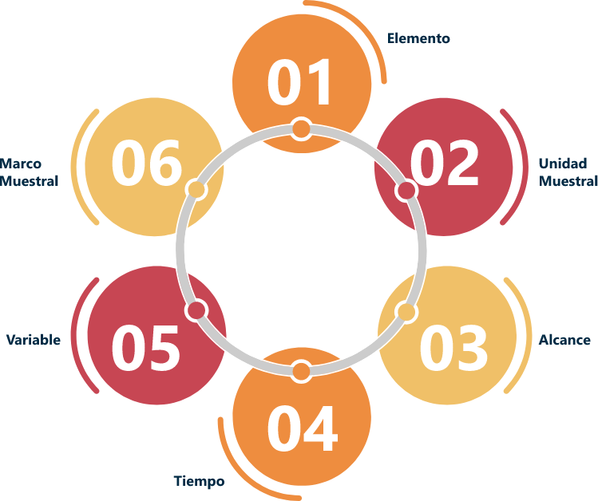Usaremos el siguiente ejemplo para determinar cómo se obtiene la población estudio.
01Elemento: es quien se observa, se mide o a quien corresponde la información. Ej. Detergente marca Ariel presentación: granulado, barra, liquido. 02Unidad muestral: colección de elementos con características homogéneas. Ej. Supermercados, bodegas, despensas, tiendas, fabricas, hogares. 03Alcance: área o espacio geográfico que abarca la investigación: país, departamento, municipio, barrio, localidad. Ej. País: Colombia, departamento: Santander, ciudad: Bucaramanga, barrio: centro 04Tiempo: época o fecha en la que se realiza la investigación. Ej. Un mes (marzo). 05Variable: lo que se va a estudiar del elemento. Ej. Ventas (unidades, pesos, gramos). 06Marco muestral: listado de unidades muéstrales que conforman la población estudio. Ej. Listado de supermercados Éxito.Luego de definir cada uno de los ítems anteriores se realiza un resumen para obtener la población estudio.
Población estudio
Monitorear las ventas de la detergente marca Ariel, presentación granulada con suavizante de 500 gramos en los supermercados Éxito de la ciudad de Bucaramanga durante el mes de marzo.
Las poblaciones se deben definir con toda claridad de tal manera que no exista confusión sobre si un determinado elemento pertenece o no a la población.
Ej. En un estudio del nivel salarial de los operarios del sector de confecciones de la ciudad, una definición de población podría ser la siguiente: “Todos los operarios del sector de confecciones de la ciudad”
La población se representa por la letra N mayúscula y existen dos clases de poblaciones:
Clases de poblaciones
| Poblaciones Finitas | Poblaciones infinitas |
|---|---|
|
|
|
| Son las poblaciones a las cuales se les pueden determinar fácilmente el número de elementos que las componen, es decir, su tamaño. |
Son las poblaciones que físicamente es imposible numerarlas o determinar su tamaño. |
2.2 Muestra
En la investigación de mercados lo ideal sería contar con la información de todo su mercado o universo; pero es costoso, de difícil control y requiere un tiempo muy considerable para la investigación, por lo que tomar una muestra representativa y suficiente que permita obtener resultados confiables y oportunos con una inversión efectiva. Para determinar la muestra es necesario considerar primero cuál es el universo total de elementos posibles a investigar. (Martinez,2011)
Este subgrupo de la población de interés sobre el cual se recolectan datos y debe ser representativo de dicha población. La muestra es estadísticamente representativa.
Santiago Martínez Vela (2011) explica se debe entender que la muestra es una parte del universo y debe presentar los mismos fenómenos que ocurren en este con el fin de estudiarlos y medirlos. Para que la muestra alcance los objetivos preestablecidos debe reunir las siguientes características:
Ser representativa
Es decir, todos sus elementos deben presentar las mismas cualidades y características del universo.
Ser suficiente
La cantidad de elementos seleccionados, si bien tiene que ser representativa del universo, debe ser amplia y plural.
Cálculo del tamaño de la muestra
En la investigación de mercados lo ideal sería contar con la información de todo su mercado o universo; pero es costoso, de difícil control y requiere un tiempo muy considerable para la investigación, por lo que tomar una muestra representativa y suficiente que permita obtener resultados confiables y oportunos con una inversión efectiva. Para determinar la muestra es necesario considerar primero cuál es el universo total de elementos posibles a investigar. (Martinez,2011)
Este subgrupo de la población de interés sobre el cual se recolectan datos y debe ser representativo de dicha población. La muestra es estadísticamente representativa.
Santiago Martínez Vela (2011) explica se debe entender que la muestra es una parte del universo y debe presentar los mismos fenómenos que ocurren en este con el fin de estudiarlos y medirlos. Para que la muestra alcance los objetivos preestablecidos debe reunir las siguientes características:
Una población infinita: aquella donde el universo está compuesto por más de 100.000 elementos.
Una población finita: donde el universo se compone por un número inferior a 100.000 elementos. (Martinez,2011)
Para poblaciones infinitas la muestra se obtiene con la siguiente fórmula:
Para poblaciones finitas la muestra se obtiene con la siguiente fórmula:
En donde:
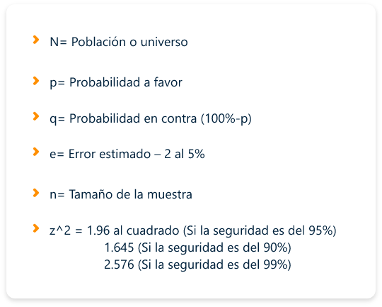2.3 Muestreo
El muestreo es una técnica para la selección de una muestra a partir de una población estadística puede ser probabilística o no probabilística.
Muestreo probabilístico
Cada unidad de muestreo de la población objetivo definida tiene una probabilidad conocida de ser elegida para la muestra. La probabilidad real de selección de cada unidad de muestreo puede o no ser igual a la de las demás, lo cual depende del tipo de diseño de muestreo que se utilice (Hair et al., 2010; Hernández et al., 2014).
Muestreo No probabilístico
Son aquellas en las que elementos específicos de la población han sido seleccionados en forma no aleatoria. No aleatoriedad resulta cuando elementos de la población se seleccionan por conveniencia del investigador (McDaniel,2016).
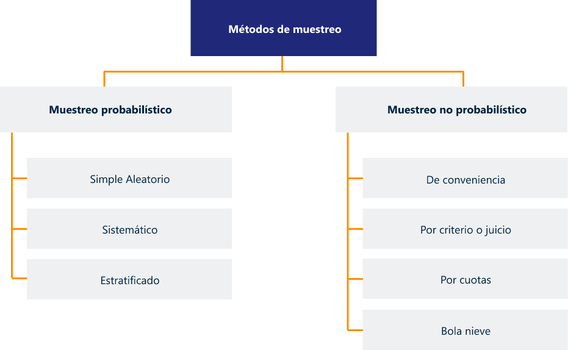Fuente: Autor
El muestreo No probabilístico lo explica McDaniel (2016) de la siguiente manera:
Muestras por conveniencia: basadas en personas fácilmente accesibles y que están gustosos de colaborar con la investigación.
Muestras por criterio o juicio: se basan en el juicio del investigador sobre la representatividad de la población en estudio.
Muestras por cuotas: basadas en factores demográficos o de clasificación seleccionados por el investigador, se establece para subgrupos de la población.
Muestras de bola de nieve: los encuestados adicionales se seleccionan con base en referencias de los encuestados iniciales.
Los tres principales métodos de muestreo probabilístico son: muestreo aleatorio simple, muestreo sistemático y muestreo estratificado.
2.3.1 Muestreo aleatorio simple
Muestreo aleatorio simple: asegura que cada unidad de muestreo en la población objetivo tenga una conocida o igual oportunidad de ser elegida; una forma práctica de elegir la muestra es crear una tabla de números aleatorios en computador, o con el uso de números randómicos. (Hair et al., 2010; Hernández, et al., 2014)
Se garantiza que cada miembro de la población tenga una posibilidad conocida e igual de ser seleccionado para la muestra. El muestreo aleatorio simple comienza con un listado actualizado y completo de la población. (McDaniel,2016)
2.3.2 Muestreo estratificado
Muestreo aleatorio estratificado: se le llama estratificado ya que la población va a ser dividida en diferentes grupos o estratos. Este muestreo se utiliza cuando la población objetivo presenta distorsión o extremos en la distribución de la probabilidad de la población objetivo. El objetivo es minimizar la variabilidad dentro de cada estrato y maximizar las diferencias entre estos (Hair et al., 2010; Hernández, et al., 2014).
2.3.3 Muestreo sistemático
Muestreo aleatorio sistemático: es similar al muestreo aleatorio simple, pero requiere que la población se ordene de alguna manera. Para aplicar este muestreo el investigador debe tener la capacidad de obtener una lista de todas las unidades de muestreo potenciales que compongan la población objetivo definida (Hair et al., 2010; Hernández, et al., 2014).
2.4 Frecuencia
Frecuencia. Los datos se clasifican y ordenan de acuerdo a ciertas características cualitativas o cuantitativas indicando el número de veces que se repiten los valores, (MartínezB,2011). Si se da en números absolutos es frecuencia absoluta y en porcentajes es frecuencia relativa.
Frecuencia relativa. La frecuencia relativa de una clasificación es el número de veces que una observación cae sobre la clasificación, la cual está representada como una proporción del número total de observaciones. Por esta razón, la frecuencia relativa se expresa en fracciones, decimales o porcentajes, (Domínguez,2015).
El cálculo de la frecuencia relativa se obtiene empleando la expresión, en donde n es el número total de datos.
Frecuencia relativa acumulada. Lafrecuencia relativa acumulada de una clase Ci es la suma de las frecuencias relativas de todas las clases anteriores a Ci. Ésta se expresa como fracción, decimal o porcentaje. (Domínguez,2015)
Intervalos. La variable es continua todos sus valores se agrupan, dividiendo el espacio entre valores límites.
En la siguiente tabla se explica numéricamente la frecuencia.
| Clase | Intervalo | Frecuencia absoluta | Frecuencia relativa | Frecuencia relativa acumulada |
|---|---|---|---|---|
| 01 | 15 - 18 | 4 | 11% | 11% |
| 02 | 19-22 | 8 | 22 % | 33 % |
| 03 | 23-26 | 2 | 5% | 38% |
| 04 | 27-30 | 10 | 28% | 66% |
| 05 | 31-34 | 6 | 17% | 83 % |
| 06 | 35-38 | 6 | 17% | 100% |
| 36 | 100% |
Fuente: Autor
2.5 Distribución de frecuencias
La distribución de frecuencias es una de las primeras formas de presentar la información para analizarla. Su objetivo es obtener el conteo de un número de respuestas asociadas con diferentes valores de una variable que se expresa en números o porcentajes. Una distribución de frecuencias para una variable produce una tabla de frecuencias, éstas pueden ser presentadas en gráficos (barras, o sectores) (Benassini, 2009; Hernández et al., 2014; Malhotra, 2008)
Es una manera de presentar los datos de forma organizada, donde se muestra el conteo de las respuestas obtenidas y clasificadas según variables de análisis. esta se expresa de dos formas: en números absolutos y en porcentajes. (Aragón,2011).
Una vez se han recolectado los datos es importante determinar la frecuencia en que ocurren así podremos observar cómo se distribuye un conjunto de datos.
Ej. Se entrevistó a 20 jóvenes para determinar cuántos refrescos consumen al día.
Cuadro de frecuencia.
| Ubicación | Tipo | Ejemplos | Razón |
|---|---|---|---|
| 00 | 3 | 15% | 15% |
| 01 | 3 | 15% | 30% |
| 02 | 6 | 30% | 60% |
| 03 | 4 | 20% | 80% |
| 04 | 2 | 10% | 90% |
| 05 | 2 | 10% | 100% |
| Total | 20 | 100% |
Fuente: Autor
2.6 Tabulación
La tabulación de datos es el proceso consistente en contar la cantidad de observaciones (casos) que se clasifican en ciertas categorías, presenta los datos estadísticos en forma de tablas o cuadros y aplica para variables cualitativas y cuantitativas. (Hair,2010)
En la investigación de mercados se utilizan dos formas comunes de tabulación de datos. La tabulación unidireccional indica la cantidad de entrevistados que dieron cada posible respuesta a cada pregunta en un cuestionario. La tabulación cruzada ofrece una categorización de los entrevistados y trata dos o más variables simultáneamente. La categorización se basa en la cantidad de entrevistados que han respondido a dos o más preguntas consecutivas. (Hair,2010)
2.7 Graficas
Las representaciones gráficas de datos se sirven de imágenes más que de tablas para presentar resultados de investigación. Los resultados -en particular los resultados clave– pueden presentarse más eficaz y eficientemente mediante gráficas. (McDaniel,2016).
Tipos de gráficas
2.8 Tablas
En la estadística se utilizan diferentes tablas para representar la información, las principales son las tablas de frecuencia que para (Lind, 2015), son una agrupación de datos cualitativos en clases mutuamente excluyentes y colectivamente exhaustivas que muestra el número de observaciones de cada clase.
La tabla de frecuencias es una clasificación de datos y permite tener una mejor idea acerca de los datos iniciales. Además, los valores de las frecuencias individuales se ven influidos por el tamaño de la muestra, pues cuando las muestras son grandes, las frecuencias individuales serán mayores que cuando son pequeñas. La comparación entre diferentes muestras se vuelve complicada; también se torna difícil de interpretar y comprender la problemática planteada, por ello se recurre al concepto de frecuencia relativa, (Domínguez,2015)
| X | Frecuencia absoluta | Frecuencia absoluta acumulada | Frecuencia Relativa | Frecuencia relativa acumulada |
|---|---|---|---|---|
| 1 | 7 | 7 | 0,6 | 0,6 |
| 2 | 19 | 26 | 0,15 | 0,21 |
| 3 | 25 | 51 | 0,20 | 0,41 |
| 4 | 12 | 63 | 0,10 | 0,50 |
| 5 | 23 | 86 | 0,18 | 0,69 |
| 6 | 15 | 101 | 0,12 | 0,81 |
| 7 | 8 | 109 | 0,06 | 0,87 |
| 8 | 16 | 125 | 0,13 | 1,00 |
| Total | 125 | 125 | 1 | 1 |
Fuente: Autor
2.9 Medidas de tendencia central
La estadística descriptiva es un medio eficiente de resumir las características básicas de grandes conjuntos de datos. En un análisis estadístico, el analista calcula uno o varios números que revelan algo sobre las características de grandes conjuntos de datos, (McDaniel,2016).
Las medidas de tendencia central son puntos en una distribución obtenida, los valores medios o centrales de ésta, y nos ayudan a ubicarla dentro de la escala de medición. Las principales medidas de tendencia central son: moda, mediana y media, (Hernández et al., 2014)
Moda. es la categoría o puntuación que ocurre con mayor frecuencia. (Hernández et al., 2014)
Definida como aquel valor de la variable que más se repite, es decir que tiene la máxima frecuencia de la distribución.
Datos: 6, 8, 6, 10, 5
La moda: la que más se repite:
Md = 6
Si hay dos modas se denomina Bimodal
Si hay más modas se denomina Multimodal
Media. es el valor que divide la distribución por la mitad. Esto es, la mitad de los casos caen por debajo de la mediana y la otra mitad se ubica por encima de ésta. La mediana refleja la posición intermedia de la distribución (Hernández et al., 2014)
Es el valor central, ya sea mediante la observación directa de los datos o a través de la aplicación de la fórmula que determina la posición en donde se encuentra la mediana:
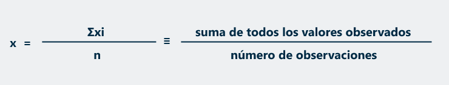Ej.
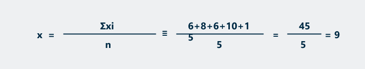Mediana. es el valor que divide la distribución por la mitad. Esto es, la mitad de los casos caen por debajo de la mediana y la otra mitad se ubica por encima de ésta. La mediana refleja la posición intermedia de la distribución (Hernández et al., 2014)
Es el valor central, ya sea mediante la observación directa de los datos o a través de la aplicación de la fórmula que determina la posición en donde se encuentra la mediana:
((n+1))/2 , donde n corresponde al número de datos.
Si el número de datos es impar dará en el medio y si es par se suman los 2 datos y se dividen en 2
Consideremos los datos 5, 6, 6, 8, 10
Al realizar la formula (5+1) / 2 se determina que la posición que ocupa la mediana es 3 entonces la mediana es me=6
2.10 Desviaciones
Las medidas de dispersión son los siguientes:
Varianza. Media aritmética de los valores absolutos de las desviaciones con respecto a la media aritmética. (Lind,2015)
En datos no agrupados se tiene en cuenta la siguiente formula:
Desviación estándar. Esta medida se expresa en las unidades originales de medición de la distribución, y se interpreta en relación con la media. Cuanto mayor sea la dispersión de los datos alrededor de la media, mayor será la desviación estándar. O, dicho de otra manera, la desviación estándar es el promedio o variación esperada en relación con la media aritmética (Benassini, 2009; Hernández et al., 2014; Malhotra, 2008).
Para la fórmula es necesario sacarle la raíz cuadrada a la varianza.
Desviación media. es igual a la media aritmética de las diferencias entre los diversos elementos y su media.
| Rango | Xi | fi | Xifi | l Xi – X l | l X i– X l fi |
|---|---|---|---|---|---|
| 30 - 50 | 40 | 6 | 240 | 20 | 120 |
| 50 - 70 | 60 | 5 | 300 | 0 | 0 |
| 70 - 90 | 80 | 4 | 320 | 20 | 80 |
| Total | 100 | 15 | 860 | 40 | 200 |
Fuente: Autor
Luego de completar el cuadro se utilizan las siguientes fórmulas para hallar la desviación media para datos agrupados son:
3. Manejo de Software para estadística.
Se debe tener en cuenta el software licenciado que tiene el Sena el más indicado es el SPSS. Se debe incorporar un manual de uso del programa SPSS (Statistical Package for the Social Sciences) (SPSS, Inc.) para la tabulación, tratamiento y análisis de los datos.
De igual manera, usted puede utilizar otro software para el tratamiento de los datos estadísticos.
Glosario
ANÁLISIS DE MERCADOEs fundamental analizar las tendencias del sector donde se desenvuelve la empresa; porque permite reflejar el comportamiento del mercado y evaluar las principales variables "generales", que pueden incidir en forma negativa o positiva. Esto permite visualizar lo "atractivo" o no de un sector. Las fuentes más comunes de información sobre el particular están en los periódicos especializados, cámaras de comercio e industria, oficinas gubernamentales, bancos, universidades, consultores especializados, internet, programas de radio y tv, etc.
DISEÑO DE LA INVESTIGACIÓN Plan global que se aplica para implantar un proyecto de investigación de mercado el objetivo primordial de esta sección es determinar el plan o modelo básico que guiará las fases de recolección y análisis de datos del proyecto de investigación que manejamos. En esta se especifica la estructura, el tipo de información que se recolectará, las fuentes de datos y el procedimiento de recolección de los datos pertinentes.
ENCUESTA Es un estudio observacional en el cual el investigador busca recaudar datos por medio de un cuestionario prediseñado, y no modifica el entorno ni controla el proceso que está en observación. Las encuestas corresponden a uno de los métodos más utilizados en la investigación debido, fundamentalmente, a que a través de las encuestas se puede recoger gran cantidad de datos tales como actitudes, intereses, opiniones, conocimiento, comportamiento.
ESTADÍSTICA Ciencia formal que estudia la recolección, análisis e interpretación de datos de una muestra representativa, ya sea para ayudar en la toma de decisiones o para explicar condiciones regulares o irregulares de algún fenómeno o estudio aplicado, de ocurrencia en forma aleatoria o condicional. Sin embargo, la estadística es más que eso, es decir, es el vehículo que permite llevar a cabo el proceso relacionado con la investigación científica
FUENTES DE INFORMACIÓN PRIMARIA Contienen información original, que ha sido publicada por primera vez y que no ha sido filtrada, interpretada o evaluada por nadie más. Son producto de una investigación o de una actividad eminentemente creativa.
FUENTES DE INFORMACIÓN SECUNDARIA Contienen información primaria, sintetizada y reorganizada. Están especialmente diseñadas para facilitar y maximizar el acceso a las fuentes primarias o a sus contenidos. Componen la colección de referencia de la biblioteca y facilitan el control y el acceso a las fuentes primarias.
INVESTIGACIÓN DE MERCADOS Recopilación, registro y análisis sistemático de la información concerniente a la comercialización de productos y servicios. La investigación de mercados es el proceso de recopilación, procesamiento y análisis de información, respecto a temas relacionados con la mercadotecnia, como: clientes, competidores y el mercado. La investigación de mercados puede ayudar a crear el plan estratégico de la empresa, preparar el lanzamiento de un producto o soportar el desarrollo de los productos lanzados dependiendo del ciclo de vida. Con la investigación de mercados, las compañías pueden aprender más sobre los clientes en curso y potenciales.
INVESTIGACIÓN CUANTITATIVA Es aquella que permite examinar los datos de manera numérica, especialmente en el campo de la Estadística.
INVESTIGACIÓN CUALITATIVA Es un método de investigación usado principalmente en las ciencias sociales que se basa en cortes metodológicos basados en principios teóricos tales como la fenomenología, hermenéutica, la interacción social.
MÉTODO DE RECOLECCIÓN DE LA INFORMACIÓN Una vez determinada la necesidad de la investigación |concluyente, el investigador debe establecer en forma clara los objetivos de la investigación propuesta y desarrollar una lista específica de las necesidades de información. El siguiente paso en el proyecto formal de investigación es determinar si los datos deseados pueden encontrarse en las fuentes de datos secundarias. Estas fuentes pueden ser internas o externas con respecto a la organización. Generalmente, las fuentes de datos secundarias no satisfacen completamente las necesidades de información del estudio; es entonces cuando el investigador formula un diseño de investigación basado en las fuentes de datos primarias.
MUESTRA En estadística una muestra es un subconjunto de casos o individuos de una población estadística. Las muestras se obtienen con la intención de inferir propiedades de la totalidad de la población, para lo cual deben ser representativas de la misma.
MUESTREO Acción de escoger muestras representativas de la calidad o condiciones medias de un todo. Proceso por el cual se seleccionan los individuos que formarán una muestra, con el fin de inferir, mediante su estudio, características de toda la población.
OBSERVACIÓN La observación es un proceso que detecta y asimila los rasgos de un elemento utilizando los sentidos como instrumentos principales. El término también puede referirse a cualquier dato recogido durante esta actividad. La observación, como proceso de investigación, consiste en "ver" y "oír" los hechos y fenómenos que queremos estudiar, y se utiliza fundamentalmente para conocer hechos, conductas y comportamientos colectivos
RECOLECCIÓN DE DATOS Se refiere al uso de una gran diversidad de técnicas y herramientas que pueden ser utilizadas por el analista para desarrollar los sistemas de información, los cuales pueden ser la entrevistas, la encuesta, el cuestionario y la observación.
TABULACIÓN DE DATOS Consiste en presentar los datos estadísticos en forma de tablas o cuadros.
Material complementario
| Nombre del documento o material. | Tipo de material. | Enlace del Recurso. |
|---|---|---|
| Demoabi (s.f). Muestreo. | Video | Descargar |
| Kotler,2016, Dirección de marketing | Libro | Descargar |
| Prettel,2016, Marketing, una herramienta para el crecimiento | Libro | Descargar |
| Malhotra,2008, Investigación de mercados | Libro | Descargar |
| McDaniel, C. & Gates, R., 2016, Investigación de mercados | Libro | Descargar |
| Prieto, E. 2013, Investigación de mercados | Libro | Descargar |
| Dos Santos, M, 2017, Investigación de mercados. Manual Universitario. | Libro | Descargar |
| Rosendo, V. (2018). Investigación de mercados. | Libro | Descargar |
| Sampieri, R. (2018) Metodología de la investigación. | Libro | Descargar |
| Martínez, S. (2011) Innovación en la investigación de mercados | Libro | Descargar |
| Hair, J. & Bush R. (2010) Investigación de mercados | Libro | Descargar |
| Martínez Bencardino, C. (2011). Estadística básica aplicada | Libro | Descargar |
| Lind, D. & Marchal, W. (2015) Estadística aplicada | Libro | Descargar |
| Domínguez, J. (2015) Estadística para administración y economía | Libro | Descargar |
Referencias bibliográficas
Armstrong, G. & Kotler, P. (2013). Fundamentos de Marketing. Ed. 11. México: Person Educación
Domínguez, J. (2015) Estadística para administración y economía. México. Alfaomega
Dos Santos, M. (2017). Investigación de mercados. Manual Universitario. Madrid. Editorial Díaz de Santos
Hair, J. & Bush R. (2010) Investigación de mercados un ambiente de información digital. Ed. 4. McGraw Hill
Kotler, P; Keller, K. (2016). Dirección de marketing. Ed. 15. México. Pearson
Lind, D. & Marchal, W. (2015) Estadística aplicada a los negocios y la economía. Ed. 16. México. Mcgraw Hill
Malhotra, N. (2008). Investigación de mercados. Ed.5. México. Person Education
Martínez Bencardino, C. (2011). Estadística básica aplicada. Ed. 4. Bogotá. Ecoe Ediciones.
Martínez, S. (2011) Innovación en la investigación de mercados. Bogotá. Alfaomega
McDaniel, C. & Gates, R. (2016) Investigación de mercados. Ed. 10. México. Cengage Learning
Prettel, G. (2016). Marketing, una herramienta para el crecimiento. Bogotá. Ediciones de la U
Prieto, J. E. (2013). Investigación de mercados. Ed. 2. Bogotá: Ecoe Ediciones.
Rosendo, V. (2018). Investigación de mercados. Aplicación al marketing estratégico empresarial. Madrid. Esic
Sampieri, R. (2018) Metodología de la investigación. Las rutas cualitativas, cuantitativas y mixta. México. McGraw Hill.
Fotografías y vectores tomados de https://www.shutterstock.com/ y https://www.freepik.es/
Licencia Creative Commons
CC BY-NC-SA
Ver licencia.